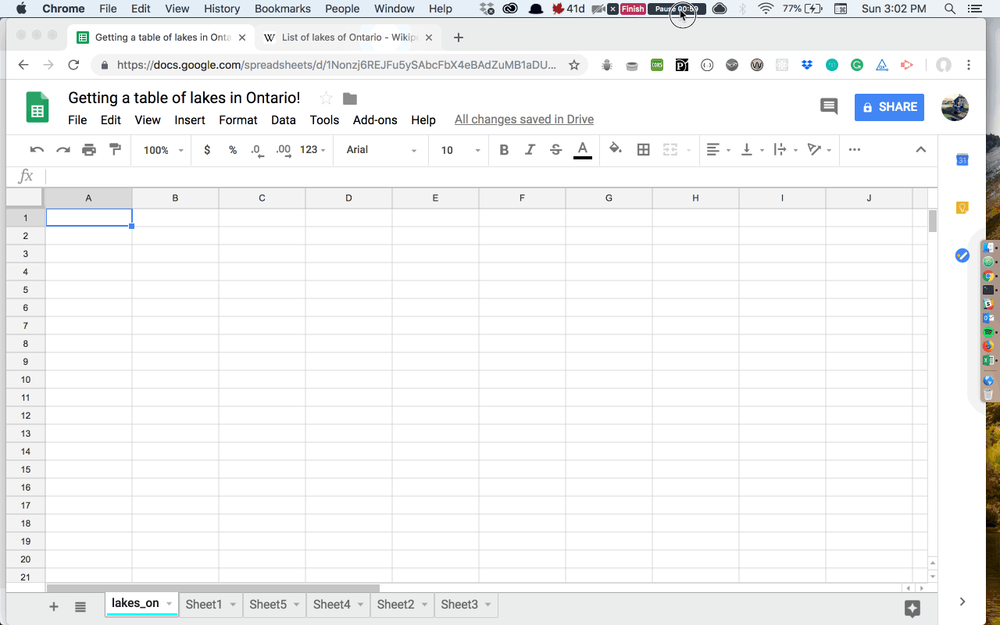
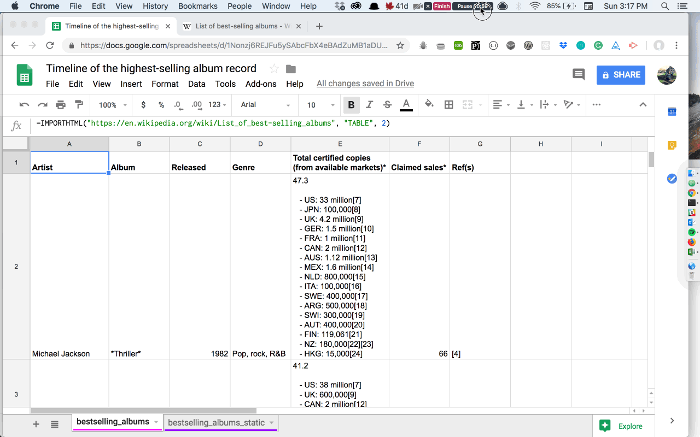
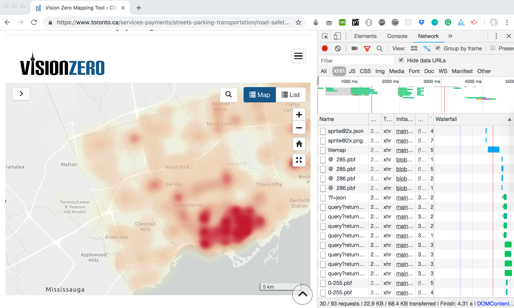
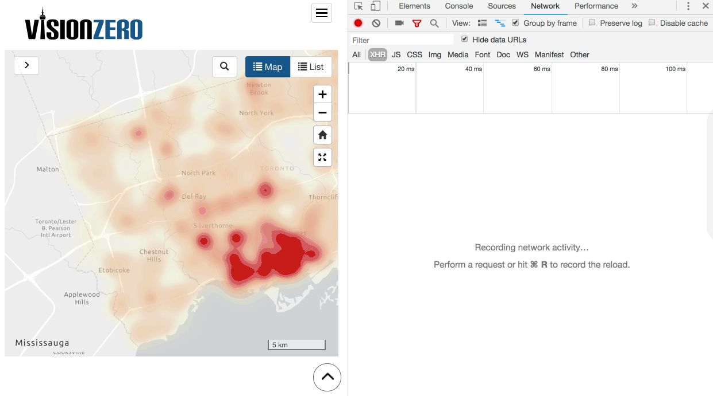
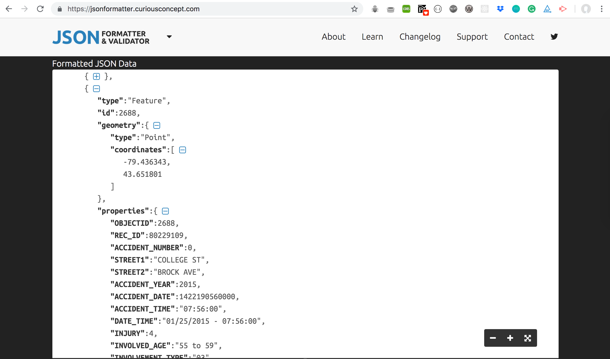

Searching for data (Googling)
Search by file type by adding to your search
- look only for spreadsheets
filetype:XLS filetype:CSV - look for geodata
filetype:shp - look for database extracts
filetype:MDB, filetype:SQL, filetype:DB - look for PDF files
filetype:pdf
Search by part of a URL
inurl:downloads filetype:xlswill try to find all Excel files that have “downloads” in their web addresssite:agency.govto limit your search to only those results on a single domain name
Search for bulk data
site:agency.gov Directory Listingmay give you some listings generated by the web server with easy access to raw files
More on finding data / advanced Googling
- 🔗 ProPublica’s slide dek “Where to find data”
- 🔗 Learno’s Google search for journalists
- 🔗 Full list of advanced search operators
Basic web scrapping
- Use existing function in Google Spreadsheets or Excel to import data
IMPORTXML: Imports data from any of various structured data types including XML, HTML, CSV, TSV, and RSS and ATOM XML feeds.IMPORTRANGE: Imports a range of cells from a specified spreadsheet.IMPORTFEED: Imports a RSS or ATOM feed.IMPORTDATA: Imports data at a given url in .csv (comma-separated value) or .tsv (tab-separated value) format.
=IMPORTHTML("https://en.wikipedia.org/wiki/List_of_lakes_of_Ontario", "table", 1)
=IMPORTHTML(URL, query, index)
Step-by-step explanation
Step 1. Find the data (in a table, url with .csv/.tsv, RSS feed, or XML). Check that data is available as an HTML table (check using Developer Tools); make note of the number of tables on the page. Grab the URL of the webpage.

Step 2. In a blank Google Spreadsheet, in cell A1 (top left cell), insert a IMPORTHTML function, supplying the URL, query, and index
- URL: where you are retrieving the data from
- query: what you are retrieving from the webpage
- index: which number of the query you are retrieving (ie., if there are 3 tables on a page, specify which table you need)

Step 3. This data is connected to the live data (ie., the webpage). To sort the data, or create a Pivot Table, be sure to copy the table and, in a new table, use Paste special to paste the table data. OR download the data as a CSV (File > Download as > Comma-separated values) then import into a new sheet (File > Import) — use this option for large datasets, or datasets with a lot of numbers (especially dates as these numbers will often be truncated when using copy/paste).

More on importing data
Pulling data from the Network tab
What is the Network tab?
- a tab in Developer Tools that allows us to look at requests being made on a page
- Developer Tools records all network requests in the Network panel
- we can look JavaScript/CSS files loading in the webpage
Step-by-step explanation
- Using the
Network tabto extract every incident noted on this Vision Zero map
Step 1: Open Developer Tools (right-click + inspect, or View > Developer > View Source)
* refresh the page (command + R)

Step 2: Look at XHR - this section contains all XHR/fetch requests being made (ie., to get JSON data)
* click the query in the Name section
* look at the request
* Headers: headers sent with the request for data
* Preview: what comes back (expand Features)
* Response: raw data
* Timing: how long it took

Step 3: Copy + paste into a formatter to make human-readable).
- save as JSON
- convert to CSV

More on the network tab
Data sites and services (an incomplete list)
Canadian data
- Toronto
- Toronto’s Open Data Catalogue
- data/maps kept by the city
- data: 311 calls, 911 calls, restaurant inspections, subway outages, parking tickets, etc.
- example:
- Basement flooding by ward
what:service requests by ward due to basement floodinghow much:12 years of data for all 42 wardsavailable as:CSV/Excel sheet
- Public Safety Data Portal
- City of Toronto’s Lobbying Registry
- names of every lobbyist at City Hall
- search functionality
- Councillor’s Business Expenses
- Toronto city council expenses by councillor since 2013
- available as table(s)
- Constituency office expenses since 2013
- council general expense
- council travel expense
- Toronto’s Open Data Catalogue
- Ontario
- Open Data Portal
- government data
- example:
- Government of Ontario art collection
what:basic information about the Ontario government’s art collection, dates back to 1853how much:~2,700 original works of artavailable as:CSV
- Registry of lobbyists
- searchable database of active/inactive lobbyists at Queen’s Park
- Sunshine List
- all public sector employees who were paid $100,000+
- Elections Ontario
- names of those who made contributions to political parties
- Open Data Portal
- Federal (Canada)
- Open Government Portal
- 75,000+ datasets tied to various ministries/agencies
- example:
- Art Bank Collection
what:contemporary Canadian arthow much: 17,000 paintings, prints, photographs and sculptures by some 3,000 artistsavailable as:XML
- example:
- Statistics Canada
- Census data
- The Daily
- StatsCannabis: user-generated data on cannabis prices across the country
- Trade data online
- statistics on international trade
- Transportation Safety Board
- every plane, train or boat accident or incident
- The Registry of Lobbyists
- lobbyists in Ottawa
- Recall and safety alerts database
- searchable database of recalls
- Government-tendered contracts
- All contracts awarded by the Canadian government and how much they cost
- Canlii
- searchable databases of lawsuit filed in Canada
- available by province
- Bankruptcy and Insolvency
And also:
- Creating or collecting data yourself
- crowd-sourcing
- live data (social media analytics)
- web scrapping
- ATIPs
- leaks/data dumps
- FOIs, etc.